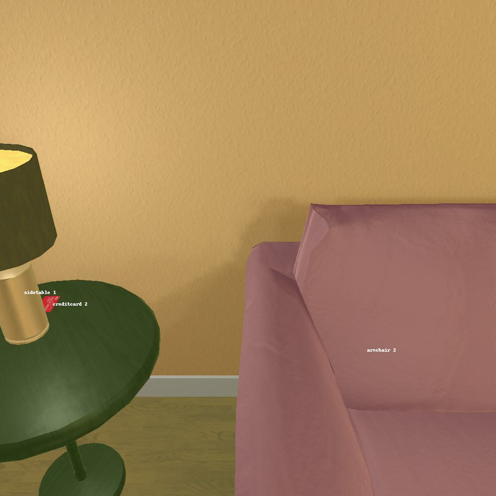

---------------------------------------------------------task: 7---------------------------------------------------------
--------------------------------------------------------------------------------------------------------------------------------------------------------------------
--------------------------------------------------------------------------------------------------------------------------------------------------------------------
Step:--------------------------------------------------------------------------11-------------------------------------------------------------------------------
----------------------------------------
VLM Prompt:
Image1:
**Instruction**
1. Analyze the provided image to identify all visible household objects, focusing on those relevant to the task description "put a creditcard in coffeetable."
2. Use the analysis of the image and the task hint "The agent must find an object of the desired type, pick it up, find the correct location to place it, and put it down there." to answer the question: what is the most reasonable action in the choices for the task description "put a creditcard in coffeetable"?
4. Decide and write the answer using the template: The answer is: (i): , where i is the real number. If there is no desired object in the image, search every place based on **Initial Observation** to find the object. And if no one is exactly correct, choose a similar answer.
**Initial Observation**
You are in the middle of a room. Looking quickly around you, you can see armchair (1-2), dresser (1), garbagecan (1), cabinet (1-4), drawer (1-4), coffeetable (1), sidetable (1), sofa (1)
**Answer Choices**
(1): go to armchair 1
(2): go to armchair 2
(3): go to dresser 1
(4): go to garbagecan 1
(5): go to drawer 1
(6): go to drawer 2
(7): go to cabinet 2
(8): go to drawer 3
(9): go to cabinet 3
(10): go to drawer 4
(11): go to cabinet 4
(12): go to coffeetable 1
(13): go to sofa 1
(14): take creditcard 2 from sidetable 1
(15): examine sidetable 1
**Answer**
Let's think step by step by following the instructions.
----------------------------------------
----------------------------------------
Original Response:
- Firstly, we need to identify all visible household objects related to the task "put a creditcard in coffeetable." In the image, we can see an armchair labeled "armchair 2" and a sidetable labeled "sidetable 1" with an item labeled "creditcard 2."
- Based on the task hint, the agent must find a creditcard, pick it up, and put it on the coffeetable. Since the "creditcard 2" is visible on the "sidetable 1," the most reasonable action is to pick it up from there.
- The answer choices provide the option (14): take creditcard 2 from sidetable 1, which directly corresponds to the task of picking up the creditcard from the sidetable to later put it on the coffeetable.
The answer is: (14): take creditcard 2 from sidetable 1.
----------------------------------------
----------------------------------------
>>> Refine Original VLM Response and Get Pure Action: take creditcard 2 from sidetable 1
----------------------------------------
-----------------------------------------------------------------
Running time: 9.176224708557129 seconds
Total Money: 2.202200000000001
-----------------------------------------------------------------
-----------------------------------------------------------------
Text Observation:You pick up the creditcard 2 from the sidetable 1.
-----------------------------------------------------------------
UNSUCCEED